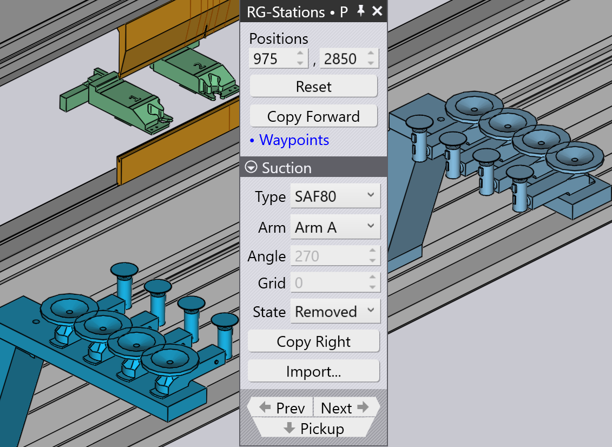
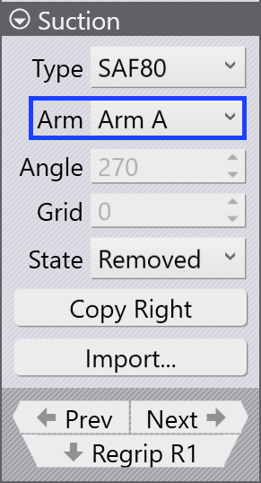

RG-Stationsパネル
つかみ換えステーションは、TecZoneではRG-Stationsと呼ばれま す。RG-Stationパネルは、曲げセルマシンのつかみ換えステーションを設定するため に使用されます。
RG-Stationsパネルにアクセスするには：
-
ピックアップパネル、曲げパネル、つかみ換えパネル、または収納パネルからRG-Stationsリンクをクリックします。
-
または、つかみ換えステーションを直接クリックします。
曲げ操作とステーションの位置に応じて、RG-Stationsパネルにはアルファベット表示 （P、R1、#1、D、など）がパネル内に表示されます。

ピックアップパネルのFlip Partチェックボックスは、現 在の位置に対してパーツを逆さまに配置するために使用されます。これは、下向きのフラ ンジとつかみ換えステーションのアームとの間の衝突を回避するのに便利な場合がありま す。TecZoneは、パーツを反転すると直ちに新しいロボットパスを再計算します。
| つかみ換えステーションが使用されていない場合、パーツの位置を制御できないた め、パネルはシンプルに見えます（パンチとダイの間のパーツのクランプ位置に依存しま す）。 |
-
Stationsは、いずれかのステーションを選択するか、両方のステーションを無効化または有効化するために使用されます。

-
Positions設定を使用して、マシンベッドレール上のステーション位置を調整します。以下に示す画像では、左側では最初にステーションがパーツの下に配置されていません。

Positionsオプションの値を変更すると、両方のステーションが配置され、RG-Stationの吸盤がパーツの下に配置されます。

Suctionセクションの設定は、吸引アームを設定するために 使用されます。
-
タイプセレクターを使用して、吸盤のタイプを変更します。
-
Armセレクターを使用して、いずれかまたはすべての吸引アームを選択します。選択すると、各アームはそのラベル（A、B、Cなど）で識別されます。
-
角度設定を使用して、アームを回転させます（5°ステップ）。
-
Grid設定を使用して、アームを伸縮させます（10 mmステップ）。

|
スライダーを個別にドラッグすることで、角度とグリッドを対話的に変更することもできます。吸引アームにカーソルを合わせると、角度とグリッドのスライダーが表示されます。 すべてのアームが選択されている場合、角度とグリッドを対話的に変更することはできません。 |
-
吸引アームの動作状態を_オフ、オン、_または_削除_に選択します。

-
吸引設定を完了した後、Copy Rightオプションを使用して、RG-Stationの反対側に同じ設定を使用できます。
-
PrevとNextリンクは、このパーツに複数のつかみ換え操作がある場合に表示され、それらの間を移動するために使用されます。
-
Regrip R1リンクは、つかみ換えステーション上のパーツの静止位置を編集するために使用されます。
つかみ換えステーションを再設定すると、TecZoneはパーツ、ロボット、グリッパーと の衝突をリアルタイムでチェックし、ステータスインジケーターを直ちに更新します。